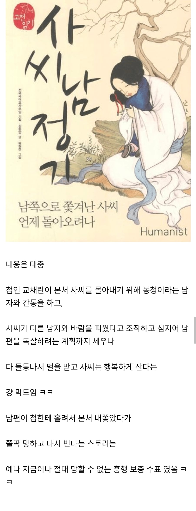
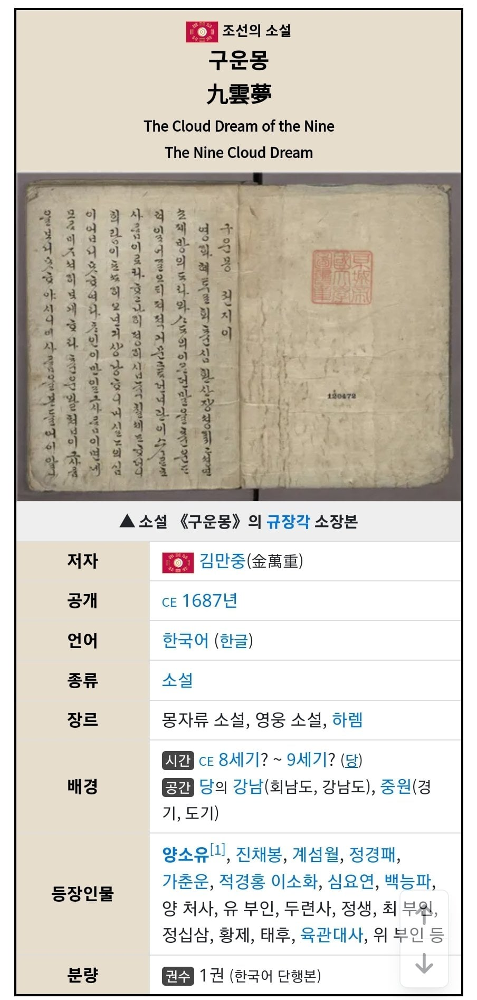
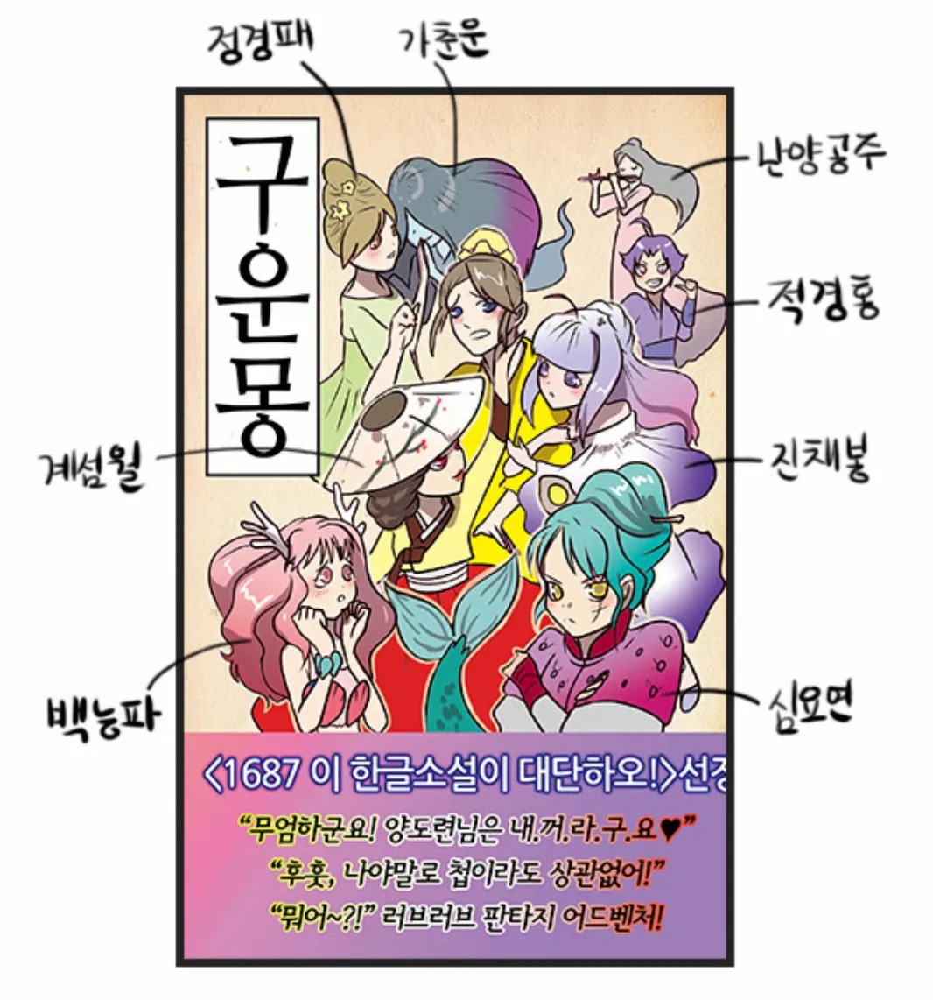
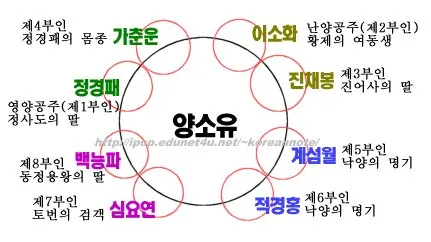
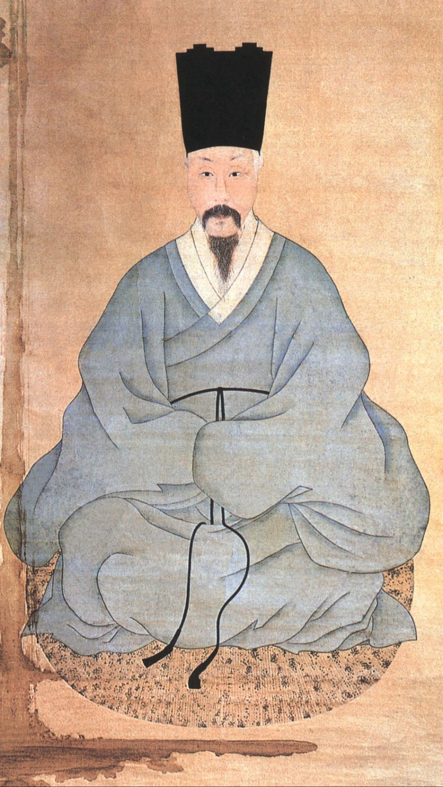

나여 김만중





나여 김만중
막장 드라마라서 그런지 인물 많이 나오는데 수능 준비할 때 ㅈ같았음
수능이면 어차피 필요한 부분이면 지문에 이름들 나오잖어
이름이 나왔다가 사회적 지위가 나왔다가 별명이 나왔다가 하니까 인물관계 놓치면 그대로 꼬여버림
만중이햄은ㅇㅈ이지;
새삼스럽지만 지금 봐도 구운몽 인물들 이름은 까리하게 잘 지었어
섬월이 경홍이 딱봐도 기녀이름 ㅋㅋㅋ
구운몽은 중국으로도 넘어가서 중국 독자들이 존나 몰입해서 2차 3차 창작까지 했다고 하던데..
중국 청나라때 고전 소설중 가장 유명한 홍루몽이 구움몽의 영향을 받지 않았을까 하는 추정도 하고 있음
중국 따거들 2차 3차창작 존나 열심히함
이거 조선 책대여점 대 인기물중 하나였을꺼임
심요연
"엄마! 내가 남성향 하렘물 써왔으니 재밌게 봐!"
사씨남정기는 장희빈이랑 숙종 까려고 만든거니깨

귀양 보냈더니 연재를 시작해버린 사람
구운몽은 어릴 때도 보면서
이거 약간 요즘에 나와도 유행할 장르같다 했는데
역시 사람 생각하는거 다 비슷하네 ㅋ
엄마 심심하시지? 이거나 읽으셔
우리아들 이런거 쓰는구나
하렘물의 시조
아시발꿈의 시조